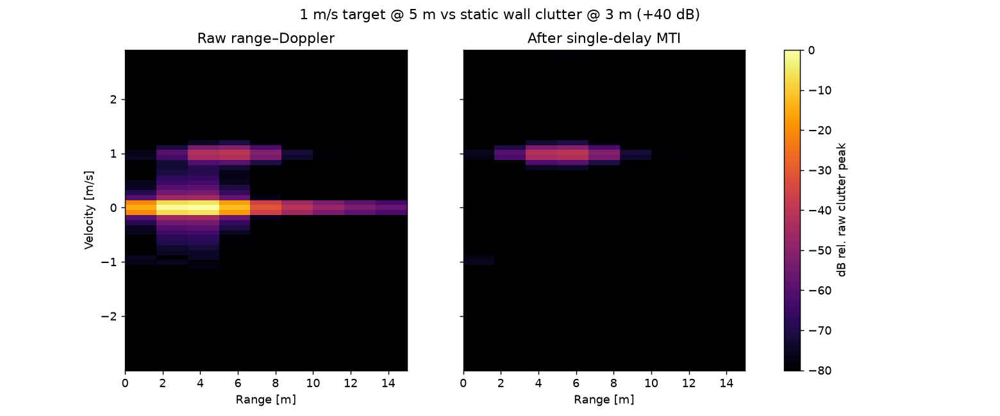
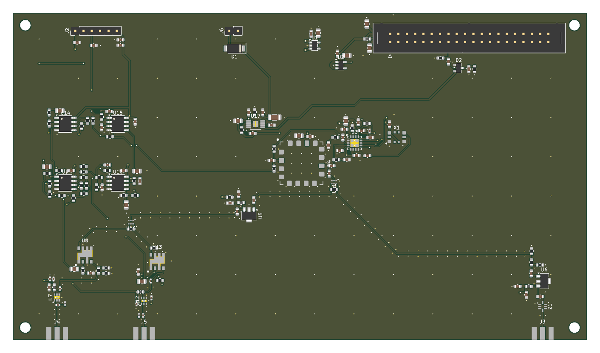
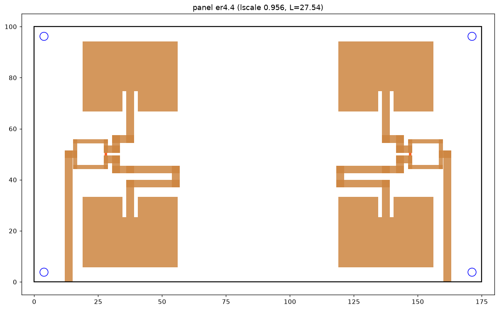

1.Signal chain
The ADC samples the beat signal from the RF board over SPI. On the FPGA, each chirp is windowed and transformed by a 1024-point range FFT (a parameterised radix-2 single-path delay-feedback core). A corner-turn memory reorders 64 chirps so that a 64-point FFT across chirps gives Doppler. A moving-target-indication filter (selectable order 0, 1 or 2) suppresses static clutter, and a CFAR detector (ordered-statistic or cell-averaging) sets a local threshold per cell. Detections and raw range-Doppler frames stream to the host over UART.
| Parameter | Value |
|---|---|
| Carrier | 2.45 GHz (λ = 12.24 cm) |
| Sweep bandwidth | 30 MHz radiating (2435 to 2465 MHz, RSS-210 Annex F); 80 MHz for bench loopback only |
| Samples per chirp / chirps per frame | 1024 / 64 |
| Default rate | 100 kS/s, 10.24 ms chirp, 1.5 frames/s |
| Range resolution | c / 2B ≈ 5 m at 30 MHz |
| Velocity span / resolution | ±3.0 m/s / 0.094 m/s (default rate) |
The legal radiating bandwidth limits range resolution to about 5 m, so the planned experiments rely on Doppler and on sub-bin range accuracy rather than on resolving closely spaced targets.

2.Verification and synthesis
Every block has a cocotb testbench run under Verilator, and the full regression (65 tests) passes. The complete chain is compared bit-for-bit against an independent Python reference model on four scenes with no mismatches; the reference model is maintained separately from the RTL so that it stays an independent check. Every bug found becomes a permanent regression test before it is fixed.
The full design places and routes on the ECP5-85F at 62.37 MHz against a 60 MHz target, using 15% of the LUTs, 21% of the block RAM and 39% of the hardware multipliers. The flow is entirely open-source: sv2v, yosys, nextpnr-ecp5, Project Trellis and openFPGALoader.
3.RF front end
The front-end board generates the chirp with an ADF4158 fractional-N PLL driving a CVCO55CC VCO, and carries the transmit chain and the receive chain down to the baseband amplifiers feeding the ADC. It connects to the FPGA board through a ribbon header. Revision B adds an RF interlock. The VCO's regulator is enabled only by a heartbeat signal from the FPGA, so the board cannot transmit while the FPGA is unconfigured, being reprogrammed, or stopped. Revision B is routed and passes DRC with full schematic parity.

The transmit and receive antennas are 2×2 microstrip patch arrays, designed and simulated in openEMS with the radome in place. The simulated realised gain is 5.04 dBi with 40.3% efficiency, and the simulated transmit-to-receive isolation is −34.4 dB. These are simulation results; the panels have not been measured.

4.Status and next steps
The FPGA evaluation board and VCO are on hand. The RF board and antenna panels are ready to order, and the bring-up software has so far only run against a software model of the hardware. Once real beat-signal data exists, the course work covers CFAR false-alarm rates checked by Monte Carlo and a measured ROC curve, range and velocity estimation error against the Cramér-Rao bound, a Kalman tracker, and classification of empty scenes, walkers and drones from micro-Doppler. Detection through a wall is a stretch goal. If the custom front end does not produce clean data in time, a commercial 60 GHz radar kit is the fallback for real measurements.